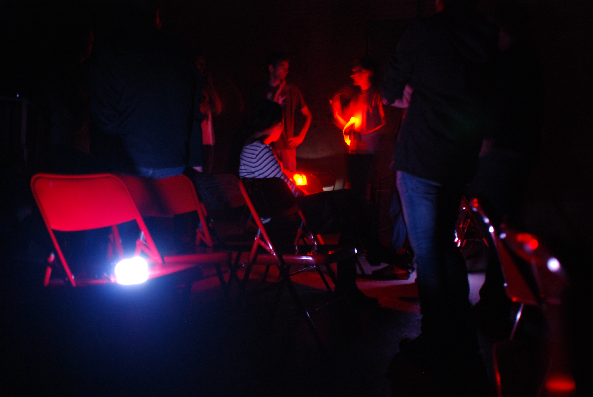
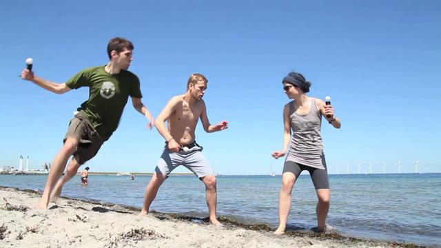
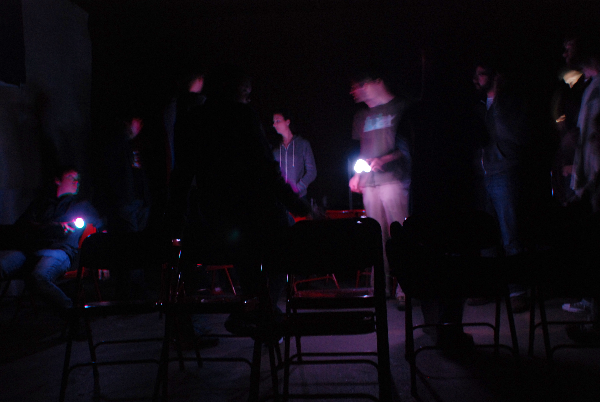

Beacons of Hope is a quaint-sounding name for a game, especially for something as ostensibly esoteric and experimental as this one, but it resonates meaningfully with the gameplay experience.
The short version of how it works is this: you stumble around in complete darkness with a dozen or so similarly hapless participants, tripping on makeshift barriers and groping on the floor, while flashes of red light (from PS Move controllers) briefly illuminate the "monsters" as they stalk and eliminate other players from the game, one by one. If players can find three hidden artifacts (also PS Move controllers), each of which can flood the space with blinding white light, they can vanquish the monsters and win the round. Melodic and dissonant sounds accompany the movements and actions of the monsters and the artifacts. It's creepy, confounding, occasionally thrilling, and like much of Doug's work, inherently social.
Doug is a doctoral candidate in the Center for Computer Games Research at the IT University of Copenhagen, a co-founder of the Copenhagen Game Collective and partner of his new games studio Die Gute Fabrik. He's most known for his studies on so-called abusive, broken, and self-effacing games, and their theoretical realization in Dark Room Sex Game, B.U.T.T.O.N., and Johann Sebastian Joust.
I had a chance to play J.S. Joust last summer, and its ingenious to say the least. It takes a reference point in traditional folk games, and repurposes modern game interfaces and technology - artifacts we're familiar with as game players - to tap into those more fundamental, more ancestral tropes of play. There is no screen for the game system to communicate feedback - communication from system to player only takes place through controller vibration, light, and music. However, the game encourages players to focus not on the system itself but rather on the social experience of actively negotiating it.
J.S. Joust does away with conventional video game necessities while appropriating and "disenchanting" the minimum remainder required to still approach play from a digital perspective, and looks at play in its most fundamental forms. This means play as in mammalian play - the kind of play that sits deep in our genetic memory, next to our experience of music and other primal-feeling phenomenon. This kind of play is less strategic, less systems-oriented, but physical, social, emotional, confrontational.
J.S. Joust subverts modern game apparatuses, in this case PlayStation Move controllers, in order to position them within a new-old context. The game takes a stance on the nature of play and technology - dialogic, accessible, and democratic. It also rejects some of the ideas of ubiquitous computing - which declares that our future will be that of a deluge of screens and interfaces and networked everything everywhere- in favor of the personal, social, and emotional, turning us away from screens and towards each other - "remind(ing) us that play is, above all, something personal."
Beacons of Hope continues this dialogue. PS Move controllers are the "beacons" that players hunt for as well as the monsters' crucial accessory. Every bit of motion registered above a certain threshold makes the controller's light flash out. A range of menacing sound effects - from soft to startling - play in response to the controller's movement. Monsters lunging to tag players out of the game are briefly illuminated as sound fills the space. Since the game is played in complete darkness, every bit of light illuminates the surrounding area instantly.

Once in Shanghai I ate at a "dark" restaurant. This meant that the dining area was in complete darkness, as in 1,000-feet-under-the-earth pitch-black. We were led to our seats by blind waiters, hands on each others' shoulders, then sat down to fumble with our utensils. We would invariably end up eating with our hands before finally being led out again.
That restaurant didn't survive more than a year or two, which is telling - if it had still been around later on, I certainly wouldn't feel the need to go back. Despite its gimmicky angle, it was worthwhile in that it was interesting to experience the sensation of being completely blinded, especially while taking in the smells, touches and tastes of an otherwise ordinary dining experience. We were temporarily forced to interact with the food and each other in ways that were entirely dependent and incapable.
During the playtest of Beacons of Hope, I was incapacitated in similar ways. I fumbled on the floor, bumped into chairs and other players; I felt defenseless and exposed. The knowledge that someone was out there hunting for us was eerie, despite the fact that they were, for the most part, as blind as we were.
Doug and his colleagues describe "abusive" game design as "refram(ing) gameplay as a dialogic relation between player and designer – a kind of conversation that presents itself in the form of a dare." The design of the game was "abusive" in the sense that we were taken abruptly out of our comfort zone in a distinctly physical way. It was meant to disrupt, yet enthrall.
I started at the sound of footsteps, I huddled behind what seemed to be an obstacle that would protect me; I hid in the corner, flattening myself against the wall. A light would flash from across the room, the sound of the monster's controllers would intensify, and I would scramble away. This experience was about helplessness first and foremost, and reacting to sudden visceral stimuli.
Then something amazing happened - I actually stumbled across one of the beacons in my blindness, and immediately felt a surge of adrenaline. After a moment's hesitation, I held it over my head, and pressed the button. A clear, penetrating note as from a bell sounded as my controller vibrated in my hand. I could see everything in a 15 foot radius. Two other players, groping on their hands and knees, looked up at me, startled. So did the nearest monster, who came for me immediately. Oops.
In following games, other players were smarter and illuminated their beacon only for an instant, immediately moving away. At one point I felt the impulse to immediately place myself between a lit beacon and an illuminated monster. Better me than him, right? Otherwise the beacon gets lost again.
I heard one, and then two melodies intertwining over the sound system, indicating as many beacons had been found. Two players cautiously and intermittently flashed their controllers, then suddenly the third was found. The beacon-bearers realized they had nearly won and ran to each other, beacons flashing. We applauded. You probably had to be there, but it was a dramatic moment, heroic even.

We played a few rounds, discussing alterations of the rules as well as possibilities for the playing-space. The game wasn't set in stone or complete, and many fundamental rules were open to discussion.
Though we seemed to be striving for an ideal "completed" Beacons of Hope, the uncertainty of it all invited comparisons to Doug and co.'s ideas on "broken" or self-effacing games - games that invite "physical and subversive play, hinting to and even telling the players that the terms of the game are up for debate." Though its hard to imagine much player creativity manifesting in complete darkness, some intentional ambiguity seemed to allow for potentially interesting possibilities. For example, monsters could "buzz" each other's controller by pressing a button, though we weren't sure what that could ultimately mean for the game.
Meaningful player creativity in this case may mean being able to tweak the code for controller sensitivity or determine new standard methods of tagging out players - whereas lighting a match you find on the floor would seem to be inappropriate. Not exactly the kind of subversive play that B.U.T.T.O.N. invited.
Its hard to imagine a "perfected" version of the game. Some dissonance seems inevitable, and even central to the experience of the game - based on the limitations or features of the space, numbers of players, potential real-life hazards, or other constraints. In a way, the conflicts felt enriching, though occasionally frustrating. It seemed like even a finished, well-tested version would need to tailor some of the rules for each play experience.
It wasn't a comfortable experience playing this game, so to speak - essentially, we spent ten minutes at a time bumping into chairs and groping around on the floor on our knees. Though cultivating discomfort is certainly intentional, a finished version needs to find a consistent sweet spot of "I'm uncomfortable, but I want to play again." I'm not sure the game is there yet. I should want to go back to the dark restaurant again and again, as it were - but not for the sake of novelty.